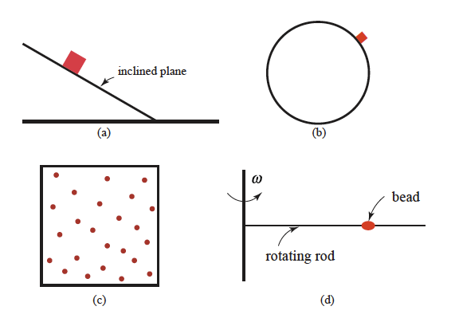
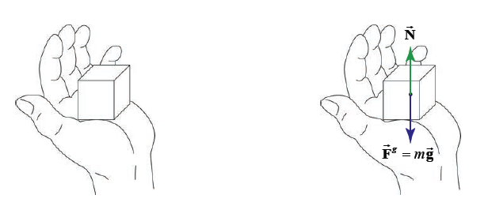
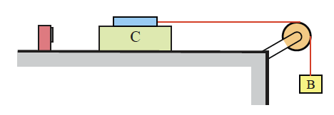
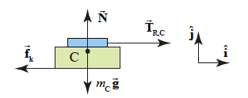
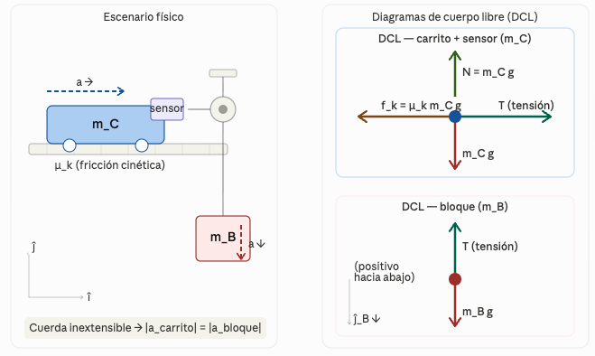
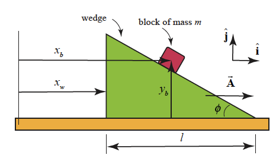
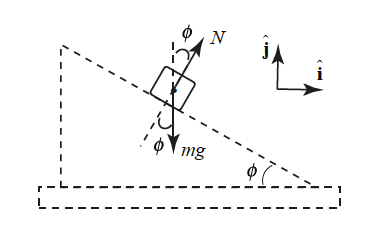
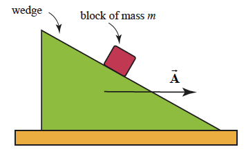

Unidad 4: Dinámica de la partícula#
Descripción general#
En esta unidad se estudian las causas que producen o modifican el movimiento de una partícula. A diferencia de la cinemática, que describe cómo se mueve un cuerpo, la dinámica explica por qué se mueve, introduciendo el concepto de fuerza y las Leyes de Newton.
Se analizarán los principales tipos de fuerzas que actúan sobre una partícula y se aprenderá a representar estas interacciones mediante diagramas de cuerpo libre.
Objetivo de aprendizaje#
Al finalizar esta unidad, el estudiante será capaz de:
comprender el significado físico de fuerza, masa y aceleración;
aplicar las Leyes de Newton al análisis del movimiento;
identificar las fuerzas más comunes que actúan sobre una partícula;
construir diagramas de cuerpo libre;
resolver problemas dinámicos en una y dos dimensiones.
1. Introducción a la dinámica#
La dinámica es la rama de la mecánica que estudia las causas que provocan el movimiento de un cuerpo.
Mientras la cinemática describe trayectorias, velocidades y aceleraciones, la dinámica introduce las interacciones responsables de esos cambios de movimiento.
En mecánica clásica, el vínculo entre fuerza y movimiento se expresa mediante las Leyes de Newton.
2. Conceptos fundamentales#
Fuerza#
Una fuerza es toda interacción que, aplicada sobre un cuerpo, puede:
cambiar su estado de movimiento;
modificar su rapidez;
cambiar su dirección;
deformarlo.
La fuerza es una magnitud vectorial y su unidad en el Sistema Internacional es el newton:
Masa#
La masa es una propiedad intrínseca de un cuerpo que mide su resistencia al cambio de movimiento.
En dinámica, la masa cuantifica la inercia del cuerpo.
Su unidad en el Sistema Internacional es el kilogramo:
Aceleración#
La aceleración es la variación de la velocidad con el tiempo.
Su unidad en el Sistema Internacional es:
3. Primera Ley de Newton#
La Primera Ley de Newton, o Ley de Inercia, establece que:
Un cuerpo permanece en reposo o en movimiento rectilíneo uniforme mientras la fuerza neta que actúa sobre él sea cero.
Esto significa que si no hay fuerza neta, no hay aceleración.
Matemáticamente:
Consecuencia física#
Un cuerpo no necesita una fuerza para mantenerse en movimiento; necesita una fuerza neta solo para cambiar su estado de movimiento.
4. Segunda Ley de Newton#
La Segunda Ley de Newton establece que la aceleración de una partícula es proporcional a la fuerza neta que actúa sobre ella e inversamente proporcional a su masa.
Matemáticamente:
Esta es la ecuación central de la dinámica.
Interpretación#
si la fuerza neta aumenta, la aceleración aumenta;
si la masa aumenta, la aceleración disminuye;
la aceleración tiene la misma dirección que la fuerza neta.
En componentes cartesianas#
En dos dimensiones:
Esto permite analizar cada eje por separado.
4.1 Fuerzas de Restricción (Constraint Forces)#
Existen fuerzas que no están descritas por una ley de fuerza previa. sino que son determinadas por el efecto que producen sobre el movimiento. Se distinguen 4 ejemplos mostrados a continuación:
{kind=link}

Figura 29 Movimientos restringidos: a) Partícula que se desliza hacia abajo por un plano inclinado, b) Particulas deslizandose hacia abajo por una esfera, c) Moleculas de gas en un espacio cerrado, d) Perla en varilla giratoria#
4.1 Fuerzas de contacto#
Cuando dos superficies se tocan, surge una fuerza de contacto C que se descompone en dos componentes vectoriales perpendiculares entre sí:
donde N es la fuerza normal (perpendicular a la superficie) y f es la fuerza de fricción (tangencial a la superficie).
{kind=link}

Figura 30 Bloque descansando en una mano (izq.) Fuerzas que actúan sobre el bloque (der.)#
5. Tercera Ley de Newton#
La Tercera Ley de Newton establece que:
Si un cuerpo A ejerce una fuerza sobre un cuerpo B, entonces B ejerce sobre A una fuerza de igual magnitud y misma dirección, pero de sentido contrario.
Matemáticamente:
Observación importante#
Las fuerzas de acción y reacción:
siempre aparecen en pares;
actúan sobre cuerpos distintos;
no se anulan entre sí porque no actúan sobre el mismo cuerpo.
6. Fuerza neta y equilibrio#
La fuerza neta es la suma vectorial de todas las fuerzas que actúan sobre un cuerpo.
Casos posibles#
Equilibrio#
Si la fuerza neta es cero:
entonces el cuerpo:
permanece en reposo, o
se mueve con velocidad constante.
Movimiento acelerado#
Si la fuerza neta no es cero:
entonces el cuerpo acelera.
7. Fuerza gravitacional o peso#
La fuerza gravitacional que ejerce la Tierra sobre un cuerpo se llama peso.
Se representa por:
donde:
\(m\) es la masa del cuerpo;
\(\vec{g}\) es la aceleración de gravedad.
Cerca de la superficie terrestre:
Magnitud del peso#
Dirección y sentido#
dirección: vertical;
sentido: hacia el centro de la Tierra.
8. Fuerza normal#
La fuerza normal es la fuerza que una superficie ejerce sobre un cuerpo apoyado en ella.
Se denota generalmente por:
Características#
siempre es perpendicular a la superficie de contacto;
su magnitud depende de la situación física;
no siempre es igual al peso.
Por ejemplo:
en una superficie horizontal sin otras fuerzas verticales, \(N = P\);
en un plano inclinado, la normal es menor que el peso.
9. Tensión#
La tensión es la fuerza transmitida por una cuerda, cable o hilo ideal cuando está sometido a estiramiento.
Se representa por:
Características#
actúa a lo largo de la cuerda;
siempre tira del cuerpo, nunca empuja;
en problemas ideales con cuerdas sin masa y poleas sin rozamiento, la tensión tiene igual magnitud en todos los tramos de la cuerda.
10. Fuerza de roce o fricción#
La fuerza de roce es la fuerza que se opone al movimiento relativo entre dos superficies en contacto.
Se distinguen dos tipos principales.
Roce estático#
Es la fuerza que impide que un cuerpo comience a moverse.
Su magnitud puede variar hasta un valor máximo:
con
donde:
\(\mu_s\) es el coeficiente de roce estático;
\(N\) es la fuerza normal.
Roce cinético#
Actúa cuando el cuerpo ya está deslizándose.
Su magnitud se modela como:
donde:
\(\mu_k\) es el coeficiente de roce cinético.
Dirección del roce#
La fricción siempre se opone al movimiento o a la tendencia de movimiento relativo entre superficies.
11. Fuerza elástica de un resorte#
Cuando una partícula está unida a un resorte ideal, la fuerza que ejerce el resorte se describe mediante la Ley de Hooke:
donde:
\(k\) es la constante elástica del resorte;
\(x\) es la deformación respecto a la posición de equilibrio.
Interpretación#
si el resorte se estira, la fuerza apunta hacia el equilibrio;
si se comprime, también apunta hacia el equilibrio.
El signo negativo indica que la fuerza es restauradora.
12. Diagramas de cuerpo libre (DCL)#
El diagrama de cuerpo libre es una herramienta fundamental en dinámica.
Consiste en representar:
el cuerpo aislado del entorno;
todas las fuerzas externas que actúan sobre él;
cada fuerza con su dirección y sentido correctos.
Utilidad del DCL#
Permite aplicar correctamente la Segunda Ley de Newton y evitar errores al identificar fuerzas.
Recomendaciones para construirlo#
aislar el cuerpo;
reemplazar cada interacción por una fuerza;
dibujar los ejes convenientes;
descomponer fuerzas si es necesario;
aplicar \(\sum F_x = ma_x\) y \(\sum F_y = ma_y\).
13. Elección del sistema de ejes#
En muchos problemas de dinámica, elegir adecuadamente los ejes facilita enormemente el análisis.
Por ejemplo.#
en superficie horizontal: ejes horizontal y vertical;
en plano inclinado: un eje paralelo al plano y otro perpendicular al plano;
en movimiento curvo: ejes tangencial y normal, si el problema lo requiere.
La elección del sistema de referencia no cambia la física, pero sí puede simplificar las ecuaciones.
14. Problemas típicos de dinámica#
La dinámica de la partícula suele aplicarse a situaciones como:
un cuerpo sobre una superficie horizontal;
un bloque en un plano inclinado;
sistemas unidos por cuerdas;
cuerpos con roce;
resortes;
ascensores;
masas colgantes y poleas ideales.
En todos estos casos, el procedimiento base es el mismo:
identificar el sistema;
construir el DCL;
elegir ejes;
aplicar las Leyes de Newton.
15. Interpretación de la Segunda Ley en distintas direcciones#
La ecuación:
es vectorial. Esto significa que debe aplicarse componente por componente.
En el eje horizontal#
En el eje vertical#
Esto es especialmente importante cuando:
hay fuerzas inclinadas;
existe plano inclinado;
hay aceleración solo en una dirección.
16. Relación entre fuerza y movimiento#
La dinámica permite entender varias situaciones frecuentes:
si la fuerza neta apunta en la misma dirección que la velocidad, la rapidez aumenta;
si apunta en sentido contrario, la rapidez disminuye;
si apunta perpendicularmente a la velocidad, cambia la dirección del movimiento.
Así, la fuerza neta controla la aceleración y, por tanto, el cambio de movimiento.
17 Ejercicios de ejemplo#
17.a Ejemplo: Carrito sobre una pista (Cart moving on a Track)#
Un carrito con un sensor de fuerza (masa total \(m_C\)) se desliza libremente sobre una pista horizontal con coeficiente de fricción cinética \(\mu_k\). Una cuerda conecta el sensor a un bloque de masa \(m_B\) que cuelga verticalmente a través de una polea. La cuerda y la polea son ideales (sin masa, sin fricción). Al soltar el bloque:[1]
i) ¿Cuál es la aceleración del sistema? ii) ¿Cuál es la tensión en la cuerda?
{kind=link}

Figura 31 Un carrito que cae acelerando sobre un pista por la fuerza empujadora de una cuerta. El tensor de fuerza mide la tensión de la cuerda#
{kind=link}

Figura 32 Diagrama de fuerza sobre el sensor/carrito con el vector de descomposición del contacto entre las fuerzas horizontales y verticales (componentes)#
Paso 1 — Identificación del sistema y diagramas de cuerpo libre#
{kind=link}

Figura 33 Escenario físico y diagramas de cuerpo libre#
Paso 2 — Segunda Ley de Newton sobre el carrito#
Se elige \(\hat{i}\) positivo hacia la derecha y \(\hat{j}\) positivo hacia arriba.
Dirección \(\hat{j}\): El carrito no acelera verticalmente (\(a_{c,y}=0\))
Entonces la fricción cinética vale:
Dirección \(\hat{i}\): EL carrito acelera horizontalmente con \(a_{C,x}=a\)
Paso 3 — Segunda Ley de Newton sobre el bloque#
Se elige \(\hat{j}_B\) positivo hacia abajo (en el sentido del movimiento del bloque). El bloque acelera con \(a_{B,y} = a\):
Paso 4 - Condición de restricción cinemática#
La cuerda es inextensible: ambos cuerpos tienen la misma magnitud de aceleración.
La tensión también es uniforme a lo largo de la cuerda (cuerda y polea sin masa):
Paso 5 — Resolución del sistema de ecuaciones#
Sumando las dos ecuaciones de movimiento \((17.1)\) y \((17.2)\) para eliminar T:
Finalmente:
Sustituyendo \(a\) en la ecuación del carrito \((17.1)\) para obtener \(T\):
En este ejemplo aplicamos la Segunda Ley de Newton a dos objetos: uno compuesto, formado por el sensor y el carrito, y el otro, el bloque. Analizamos las fuerzas que actúan sobre cada objeto, así como las restricciones impuestas sobre la aceleración de cada uno. Empleamos las leyes de fuerza para la fricción cinética y la gravitación en cada sistema de cuerpo libre. Las tres ecuaciones de movimiento nos permiten determinar las fuerzas que dependen de los parámetros del ejemplo: la tensión en la cuerda, la aceleración de los objetos y la fuerza normal entre el carrito y la pista.
17.b Ejemplo: Cuña acelerada (Accelerating Wedge)#
Una cuña de \(45°\) es empujada a lo largo de una mesa con aceleración constante \(\vec{A}\) según un observador en reposo respecto a la mesa. Un bloque de masa \(m\) se desliza sin fricción sobre la cuña (Figura 8.42). Encuentre la aceleración del bloque respecto a un observador en reposo respecto a la mesa.[1]
{kind=link}

Figura 34 Bloque de masa \(m\) deslizándose sobre una cuña acelerada de \(45°\)#
Paso 1 — Sistema de coordenadas y definición de variables#
{kind=link}

Figura 35 Sistema de coordenadas para el bloque y la cuña: \(\hat{i}\) hacia la derecha, \(\hat{j}\) hacia arriba. \(x_b\), \(y_b\) son las coordenadas del bloque; \(x_w\) es la coordenada horizontal de la cuña.#
Se define la aceleración de la cuña como:
donde \(A_{x,w}\) es la componente \(x\) de la aceleración de la cuña.
Paso 2 — Condición de restricción cinemática#
La superficie de la cuña obliga al bloque a permanecer sobre ella en todo momento. De la geometría (Figura 8.43 del texto) se tiene:
por lo tanto:
Diferenciando dos veces respecto al tiempo (notando que \(d^2l/dt^2 = 0\)):
lo que entrega la restricción de aceleración:
Paso 3 — Diagrama de cuerpo libre sobre el bloque#
{kind=link}

Figura 36 Diagrama de cuerpo libre del bloque: fuerza normal \(N\) perpendicular a la superficie de la cuña y fuerza gravitacional \(mg\) hacia abajo.#
Sobre el bloque actúan únicamente dos fuerzas (sin fricción):
Fuerza normal \(N\) perpendicular a la superficie de la cuña
Fuerza gravitacional \(mg\) hacia abajo
Paso 4 — Segunda Ley de Newton sobre el bloque#
Dirección \(\hat{i}\):
Dirección \(\hat{j}\):
De la ecuación \((17.b.2)\) se despeja la fuerza normal:
Paso 5 — Resolución del sistema#
Sustituyendo \((17.b.1)\) y \((17.b.4)\) en \((17.b.3)\):
Simplificando:
Despejando la componente \(x\) de la aceleración del bloque:
Sustituyendo \((17.b.5)\) en la restricción \((17.b.1)\):
Paso 6 — Caso particular \(\phi = 45°\)#
Para \(\phi = 45°\) se tiene \(\cot 45° = \tan 45° = 1\), por lo que \((17.b.5)\) y \((17.b.6)\) se reducen a:
La magnitud de la aceleración del bloque es:
Verificación de casos límite#
Condición |
Resultado esperado |
¿Se cumple? |
|---|---|---|
\(A_{x,w} = 0\) (cuña en reposo) |
\(a_{b,x} = g/2\), \(a_{b,y} = -g/2\), \(|\vec{a}| = g/\sqrt{2}\) |
✓ Caída libre sobre plano inclinado a \(45°\) |
\(A_{x,w} = g\) |
\(a_{b,x} = g\), \(a_{b,y} = 0\) |
✓ El bloque solo acelera horizontalmente |
\(A_{x,w} \gg g\) |
\(|\vec{a}| \approx A_{x,w}/\sqrt{2}\) |
✓ La aceleración de la cuña domina |
En este ejemplo aplicamos la Segunda Ley de Newton a un solo objeto (el bloque), pero la clave estuvo en derivar la restricción cinemática que impone la superficie de la cuña. Esta restricción acopla las componentes \(x\) e \(y\) de la aceleración del bloque con la aceleración \(A_{x,w}\) de la cuña, convirtiendo un problema aparentemente bidimensional en un sistema de dos ecuaciones con dos incógnitas (\(a_{b,x}\) y \(N\)).
18. Síntesis de la unidad#
En esta unidad se introdujo el estudio dinámico del movimiento de una partícula a partir del concepto de fuerza.
Se trabajaron:
las tres Leyes de Newton;
la idea de fuerza neta y equilibrio;
las fuerzas más comunes en mecánica: peso, normal, tensión, roce y fuerza elástica;
el uso del diagrama de cuerpo libre como herramienta de análisis.
Estos contenidos permiten pasar desde la descripción del movimiento a la explicación de sus causas.
Conceptos clave#
dinámica
fuerza
masa
aceleración
inercia
fuerza neta
equilibrio
Leyes de Newton
peso
fuerza normal
tensión
roce estático
roce cinético
fuerza elástica
Ley de Hooke
diagrama de cuerpo libre
Fórmulas clave#
Guía asociada#
Guía 4: Dinámica de la partícula